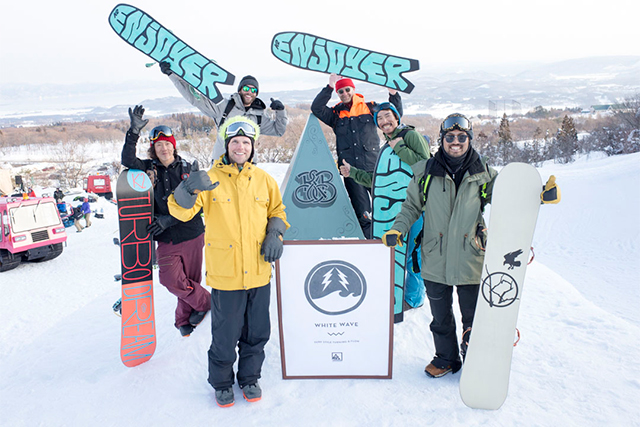

Snowboarding Club is about snowboarding and making friends. We're a unique type of club in that we meet on the mountain and are shamelessly about having a good time on the snow and making sure those around us have an awesome time too.
The Snowboarding Club philosophy is about creating community. When snow season arrives, it's often difficult to coordinate trips to the mountain with your friends and regular snowboard buddies. Snowboarding Club means you'll always have "buddies" at the mountain. And when you're at the mountain, you'll have someone else's back too.
The Snowboarding Club is about meeting new people and having good, clean fun on the mountain. Our members range in ability so there'll always be someone at a similar ability to you who'll be happy to ride with you or just be around for a catch up at lunch or at the end of the day.